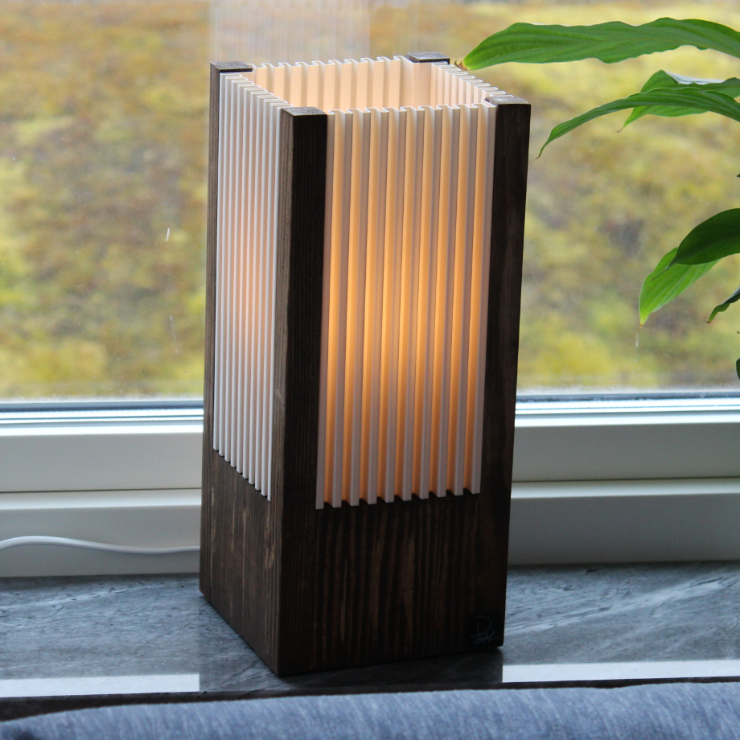
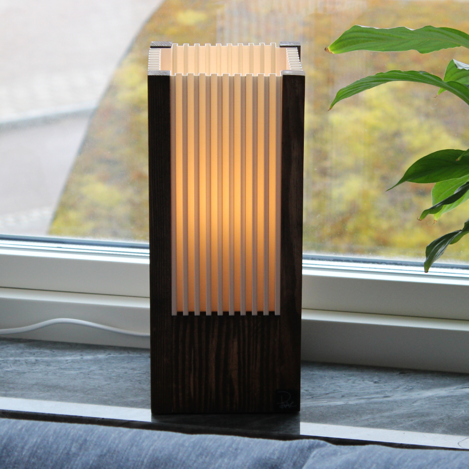
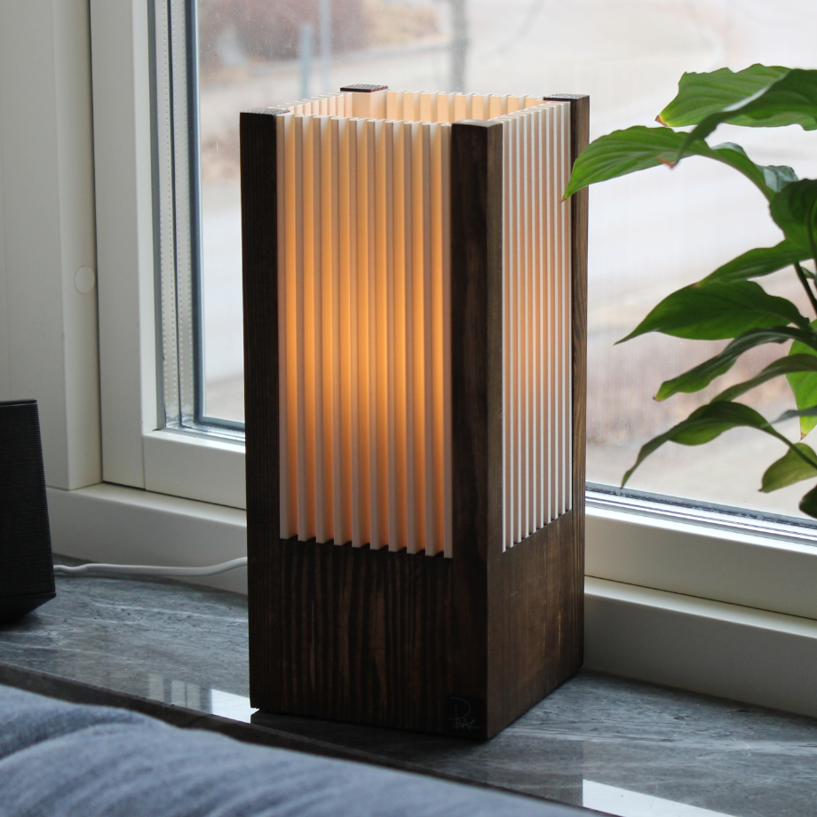
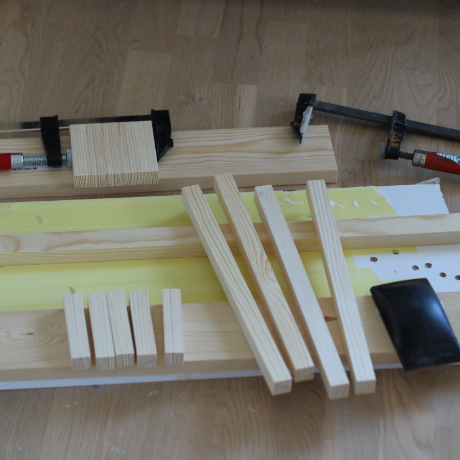
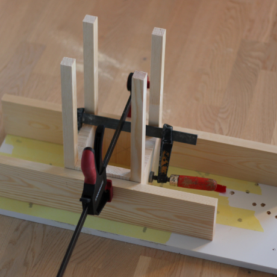

Ville göra något med fyrkantiga stavar
Blev ingen favorit direkt men duger i krig




Började med att såga till alla bitar i två olika längder
Limmade sedan ihop de korta delarna och slipade till de lite
Hade nog behövt lägga ganska mycket mer tid på slipningen dock, man ser att jag har slarvat för betsen fäster inte där

Limmade sedan ihop de korta och långa delarna
Detta va lite krabbigt att göra och det blev inte lättare när min ena tving gick sönder mitt i processen
Blev nästan rakt men inte riktigt, lyckades vrida den ena långa pinnen under limningen så fick slå sönder den och sätta på en ny
Inte så mycket att nämna om skärmen direkt, designad och printad bara